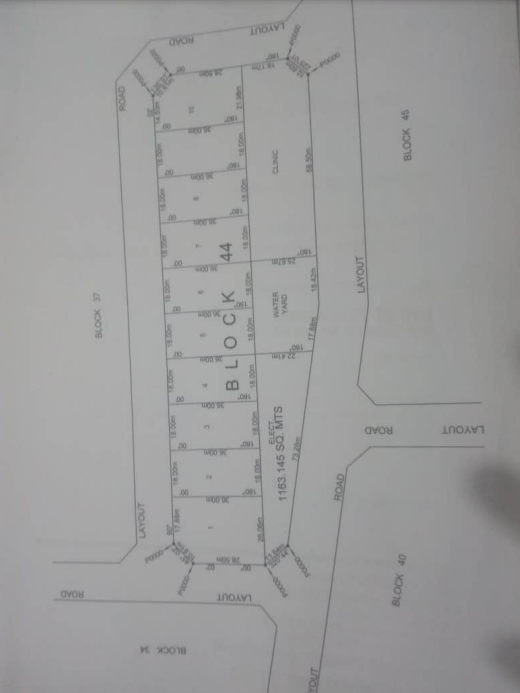

About
This site was created to unite Oko-Orisan Waterfront Land landowners. Join us as we work together
to for the rightful possession of our land.
Genesis:
Around year 2009, the Lagos State Government (LASG) led by Governor Babatunde Raji Fashola (SAN), launched the Oko-Orisan Waterfront land Scheme along the Lekki/ Epe road axis of the State. Members of this group individually purchased plot(s) of land through this initiative, and each member was issued with official LASG receipts and allocation letters by the Lands Bureau of the office of the Governor's office, authenticating our ownership.
The Situation Today:
Since our completing our contract with the Lagos State Government (LASG), we have not yet bene physically allotted our plots.
The official reason given is that the scheme had been suspended since 2013 for redesigning. However, there are unconfirmed
that the LASG may be planning to re-allocate the now very juicy plots to influential individuals or move subscribers to “less attractive” locations. We have formally requested the LASG to fulfil its part of our contract by allotting our plots. After expressing our concerns in writing, our representative met with the Legal Officer at the Lands Bureau, who informed our Rep. that the matter falls outside her purview. She advised us to meet with the Executive Secretary, Lands. In response to our inquiries, the LASG through a letter dated April 2, 2024 (reference number LU/OWF/RES/18/89) confirmed that the Orisan waterfront schme is being redesigned, and no allottees can take physical possession or process their respective Certificate of Occupancy until the redesign is complete. Howver, no timeline was provided on the anticipated completion of the redisgn. Our group responded to the LASG letter on May 8th expressing regret over the lack of clear timelines. But, to this day, we have yet to receive a response from the LASG.
This group was birthed by the need for a strong platform to engage the LASG to fulfil its responsibility to the Oko-Orisan waterfront scheme subscribers.
Actions Taken by The Group To Date:
The group has corresponded with the LASG, urging them to take action. Unfortunately, the LASG’s response has been nothing short of discouraging, with no sign of any imminent resolution.
We have also embarked on broad media campaign (see below web links) to bring our issue to public attention However, this too, has not been enough to spur the LASG into action.
Please click any of the links below.
Photos

Contact
Next steps:
The group is currently exploring all available options to entire its members receive their rightful entitlements.
If you are an affected landowner, we encourage you to jon us in this collective effort.
Your participation will help us form a stronger voice as we continue our advocacy.
For more information, or to join the group, kindly reach out to us by using the group’s email address and X handle below:
Email: landmatters.okoorisan@gmail.com
X Handle: @LandMataz